|
What is Deinterlacing? Facts, solutions, examples. |
|
|
|
This site shows you how to make brilliant looking DivX video (from TV, DVB,
DV, DVD etc) for archiving purposes OR how to reduce file size to produce
good-looking yet small DivX footage.
If you are dealing with DivX, this site features a few video statistics and
experiments, that may be of some interest for all video publishers and DivX
enthusiasts.
A great part of this site deals with interlacing/deinterlacing which
introduces some of the nastiest interlacing problems like these:
|
|
Resized before deinterlaced 1
Resized before deinterlaced 2
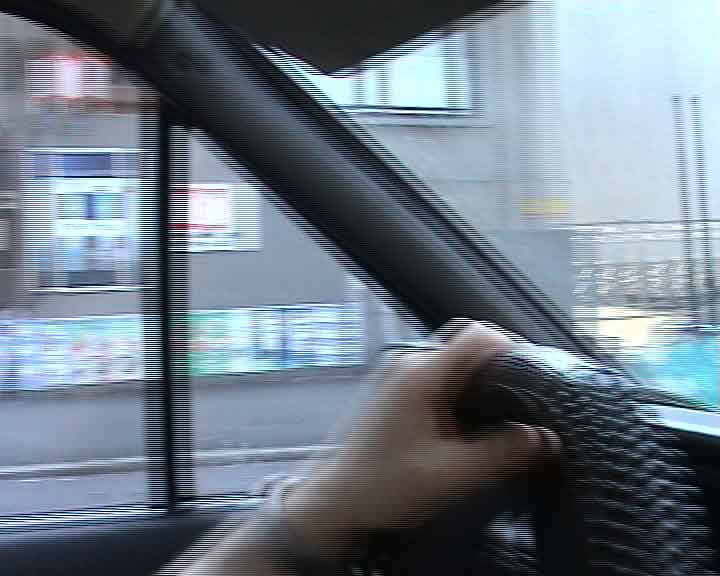
Not resized and not deinterlaced
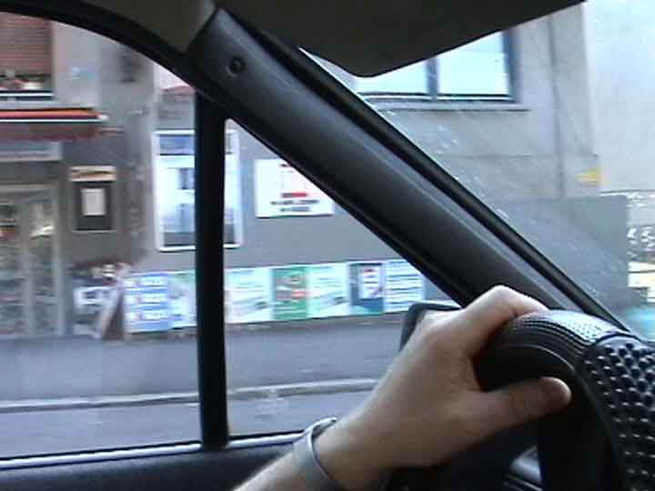
Deinterlaced properly
Well, read on.
|
Some definitions and explanations |
|
|
Do you think you record 25 frames per second when you make a
movie with
your digital camcorder?
Not quite.
Your digital camcorder does the following:
Records 50 pictures per
second, intermixing every 2 consecutive pictures (with half the
height) into 1 frame.
In fact, you don't call them pictures, but fields. So 2 fields are
mixed into 1 frame. This mixing is called interlacing.
|
So this is the timeline of
your digital camcorder or digital television
|
| 1) |
Record field 1
|
|
2)
|
Record field 2 |
| 3) |
Mix (=interlace) field 1 and field 2 into one frame and save the
frame as frame 1.
|
| 4) |
Record field 3
|
| 5) |
Record field 4
|
| 6) |
Mix (=interlace) field 3 and field 4
into one frame and save the frame as frame 2. |
Note: The timeline of your analog camcorder is usually different.
Analog camcorders, VCRs etc do not mix the recorded pictures. They record
picture after picture after picture. Analog camcorders use "odd" and
"even" sets of scan lines, too, but they don't intermix them into 1
frame.
One could use the term 50 images per second (50 ips),
to emphasize, that both analog and digital recorders are capturing 50
times per second.
The digitalizers nowadays (e.g. Hauppauge WinTV) capture
25fps=50 fields per second, so in the end on your harddisk it
makes no difference to say 25 (interlaced) digital frames per second or
50 not interweaved analog fields per second. But there IS a difference.
So the timeline of the analog
camcorder is/was:
| 1) |
Record field 1 (=frame 1) (odd scan lines)
|
|
2)
|
Record field 2 (=frame 2) (even scan lines) |
| 4) |
Record field 3 (=frame 3) (odd scan lines)
|
| 5) |
Record field 4 (=frame 4) (even scan lines)
|
|
|
|
Here is an example of what your digital camcorder does:
Capture field1 (captures at half the height, or full height and then
resizes down):
Capture field2:
Field2
They pretty much look the same. But wait, they ARE different. You can see by comparing the
position of the thumb and the keyboard keys.
Now these two fields are mixed (=interlaced) into Frame1 (full
height):
What you see above is an exact frame as on tape of your
camcorder.
Here is a zoomed view of the above Frame 1:
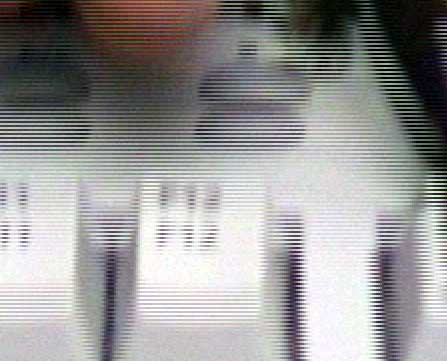
As you can clearly see above, Frame1 consists of Field1 and
Field2.
The way it looks is called saw tooth type edge distortion = mice teeth
= combing = serrations = interlaced lines.
In other words: A single frame consist of 2 captures of 2 different moments in
time. Field1=Time1, Field2=Time2. See this frame below. This is a capture
directly from MTV's Digital Video Broadcasting:
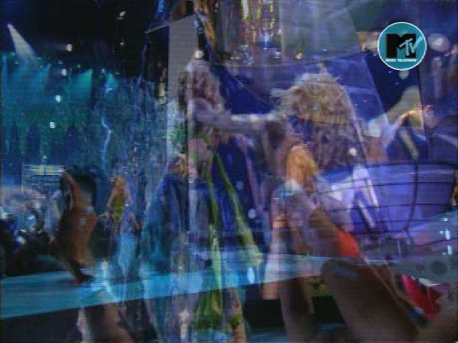
The above scene consists of 2 totally different scenes because this is the frame where there's a change from scene1 to scene2.
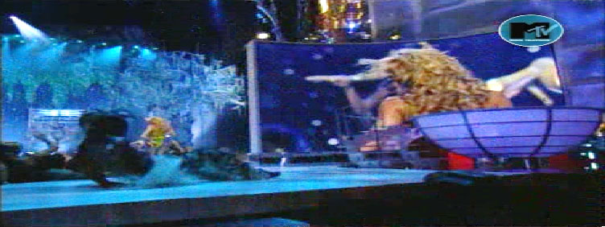
Scene1
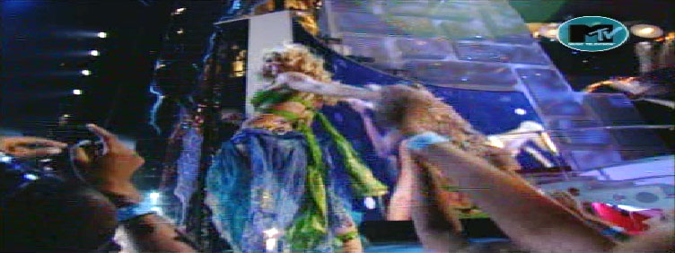
Scene2
(This is Britney Spear's performance at the MTV Video Music Awards 2001)
Because of this time intermix
(1 frame=time1+time2) it is impossible to:
|
1) |
deinterlace a frame |
| AND 2) |
keep 25 frames/second |
| AND 3) |
keep the full quality (=all
information of a picture). |
Impossible. You will have to alter at
least one of those points. Except, when there was no motion.
On a computer screen interlaced recordings are annoying to watch
because
the lines are really disturbing. Especially in scenes where there's movement from left to right (right to left) you see the interlacing, like in
this example:
The text at the bottom scrolls from right to left and thus leaves you with mice
teeth because this frame consists of 2 snapshots of time, as described above.
Mice teeth because of an up-down movement.
This is a scene from the music clip "Anywhere" from the performer
112. There aren't any motion interlace lines there, but this is a
frame where there was a short flash, thus there's a difference from one field to
the other.
To make things even more complicated, some digital camcorders have something
you could call "color interlacing". While this term maybe somewhat inaccurate to describe the source of the artefacts, it is quite descriptive for the end result.
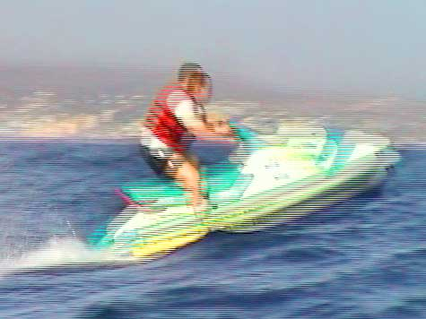
Interlaced Frame=Field1+Field2 as you can see clearly.
But even after deinterlacing some red and some green pixels stay where the last
field was.
Here is another example (after deinterlacing):
- Some camcorders mix different colors into different
fields, or use CCDs that react slower, so that you get this strange color patterns sometimes.
-
Furthermore there are camcorders with known "hardware bugs" that produce a color halo or a color bleeding or a color smearing (the example above was filmed with a Sony PC110, that has this known "color behaviour").
-
Furthermore there is something like color unsharpness resulting from the fact, that color resolution is lower than the picture resolution, meaning for example that 4 pixels share 1 color.
-
Furthermore there are color aberrations introduced by the camcorder's lens system.
- Furthermore there can be broken DV codecs, that decode buggy. You could
try Mainconcept's DV codec ($)
which has a high reputation, if you mistrust your own codec.
There is even something you could call brightness interlacing.
This is an capture from the music clip "Sexy" performed by "French
Affair" from the TV channel Tango TV (from Luxembourg). This music clip was aired progressively. There aren't any mice teeth anywhere in this clip.
However you see "brightness interlacing lines". Maybe this clip was recorded interlaced and was then transformed to be progressive and these are the left deinterlacing artefacts.
Because even with the methods described on this site it's hard to get perfect results.
No, it's not Kylie Minogue and her gay dentist. It's pretty Kylie and pretty Jason Donovan performing "Especially for you" in 1988 in "Top of the Pops"
As you see there are some deinterlacing artefacts. However, you'll hardly notice them during play.
Is interlacing a bug?
Nope.
Unfortunately this is the way digital camcorders and digital
VCRs record and digital broadcasting is done. One second of a movie consists of 25 frames = 50 interlaced
images.
That means that when you deinterlace a movie for your computer
or your projector or your TFT monitor, and you want to play it on a standard TV set,
your software (or your
hardware) have to
interlace it again.
Example: There are 2 kinds of DVDs: Some have an interlaced
format (like the examples above) and some are transferred from film to DVD
directly, thus have 25 progressive frames encoded. This is purely a decision of
the DVD company. Since TV sets expect you to feed them with
50 images per seconds (whether it's from your old analog VHS recorder or from
your antenna or from your DVD player) the DVD player needs to convert those 25 progressive
frames to 50 images and send them to the TV set. That means they have to get interlaced them (well, it's not interlacing in its original sense,
but you are making 50 images out of 25 images) instead of letting the TV simply
display those original 25 fps.
Just recently Panasonic introduced one of the first TV sets to be able
to receive progressive frames from the DVD player. So you need 2 things: A
special DVD player, that suppresses the 25p->50p conversion and this special TV
set.
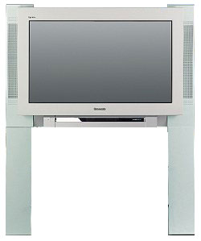
Panasonic TX 32ph40d is able to receive progressive frames
|
Why the heck?
|
|
Because it's 1930s technology.
The main reason for this: Movies with 25 non-interlaced (=progressive) frames
per second don't look very fluid. If you watched a football game with 25
progressive fps it would look as if the ball isn't flying fluidly thru the air.
With 50 fields per
second which are then combined to 25 frames per second this looks much better.
So why not record 50 images per second? Because so far there wasn't a
technology available that could record so fast or display so fast (=
camcorders recording to slowly and TV sets displaying too slowly).
I mentioned above that Field1 is Time1 and Field2 is
Time2. You also have to know that Field1 is Position1
(higher) and Field2 is Position2 (lower). Both field1 and
field2 combined together give you the full vertical (top to
bottom) resolution.
So interlacing is in fact a clever way to compress a movie when one cannot use digital compression methods. Interlacing reduces the bandwidth (= storage space nowadays) by half, without
losing vertical resolution in quiet areas (in motion areas
you don't notice very much anyway, because it's moving 50 times per
second). So
interlacing is a way to display the nonmoving parts with full
resolution and the moving parts with half resolution, but
fluidly. It's a very clever way to cut bandwidth without sacrificing much
quality.
Would you believe that one of the newest camcorders by Sony
(other Sony camcorders and other brands are better) can
record only 15 progressive frames per second in the "Progressive
Mode"? The NTSC version that is!! For
the PAL version it's only 12.5 fps. Welcome to the future.
We got a long way to go.
But even as technology marches on and camcorders get better, you
will want have 2 options: To record interlaced (= smoother motions) or
non-interlaced (= higher vertical resolution).
It is true that cinema movies are filmed with 24 noninterlaced
(=progressive) frames per second (thus about 2/2.5 times less than PAL/NTSC) and look fluid, but this has a special reason: How many frames can the human eye see?
|
|
|
|
|
How to deinterlace video, methods of
deinterlacing |
|
|
There are several methods of de-interlacing.
| Deinterlacing
methods
|
You could call it:
|
Blend
|
|
Average
|
|
Combine
Fields |
|
Both fields are overlaid together. This
gives you good results, when there's no movement, but results in unnatural low quality movements.
There seem to be a ghosty unsharpness when something moves.
Another example: Imagine you have the following frame:
Original frame
This frame consists of:
Field1 |
Field2 |
(Field1 and 2 are half the height of course, but I have resized them to make them comparable) |
Blending would do this to them:
Please note, that not only the area where the movement happened is changed
thru blend, but also the green main body.
If nothing changes from field to field then "Deinterlacing
by Blending" gives you a slight blur.
In other words: Deinterlacing by blending (which is one of the
most frequent ways to deinterlace) simluates fluent motion by blurring and
"mushes" 2 consecutive pictures together. Thus in fact you reduce
the quality down to a quarter of the possible quality.
|
You could call it:
|
Show both fields per frame. This basically
doesn't do anything to the frame, thus it leaves you with mice teeth but
with the full resolution, which is good when
deinterlacing is NOT needed.
|
You could call it:
|
Don't blend everything but only the mice
teeth themselves. This can be done by comparing frames by time or by
space/position.
This gives you good results in quiet scenes where not much is moving,
because there is nothing blurred then.
|
You could call it:
|
This seems to me a much
better idea than Blending, but unfortunately I don't know any filter or
program that can do it. The idea is: Blur the mice teeth where needed,
instead of mixing (=blending) them with the other field. This way you
would get a more film-like look.
As you see the blur gets stronger in the direction of the old position.
You could even add an effect like this (Motion blur)
This motion blur is done nowadays when you need to convert 50fps footage to 25fps footage (to make 50fps
camcorder footage look more film-like). Or to make comics and rendering (like "Monsters Inc") look more film-like.
|
You could call it:
|
You discard every second line (the
movie is half the height then) and then resize the picture during play. That is the same as skipping Field2, Field4, Field6...
You could call this "Even Fields Only" or "Odd Fields Only".
OR
There are some bad things about it.
You lose half of the resolution and the movie becomes kind of stuttering (as
mentioned above). That
means, that it doesn't play as fluidly as it could be.
|
You could call it:
|
There is also this way:
Displaying every field (so you don't
lose any information), one after the other (= without interlacing) but with 50 fps.
Thus each interlaced frame is split into 2 frames (= the
2 former fields) half the height.
As you see, you won't lose any fields, because both are displayed, one
after the other.
Sometimes "Bob" is also called "Progressive Scan". However since Bob doesn't analyze areas (Stupid Bob) nor the differences between fields this is an inappropriate synonym. Please see the next example for the "real" "Progressive Scan".
|
You could call it:
|
Progressive scan |
|
Bob+Weave
|
|
Intelligent
|
|
Adaptive
|
|
Hybrid |
|
Analyzing the two fields and
deinterlace only parts which need to. The main difference to "Area
based" is that it gives you a 50fps movie instead of a 25fps movie,
thus leaving you with perfect fluidity of motions. To say it more
academically: High temporal and vertical resolution.
This is my method of choice. You can achieve this with freeware. Read the advantages and drawbacks on this
site.
|
You could call it:
|
Analyzing the movement of objects in a scene, while the scene consists of a lot of frames. In other words: Tracking of each object that moves around in the scene. Thus effectively analyzing a group of consecutive frames instead of just single frames.
This is the best solution, but unfortunately only for companies that can pay for expensive hardware solutions.
|
NEVER BE FOOLED: If you see just one single frame instead of the
whole movie to show you the quality of any deinterlacing method, be aware. You won't
know how good or bad it really is.
NEVER.
Because you don't know how fluid the
movie plays and how many fine structures are lost and whether the deinterlacing
method still fails sometimes or leaves interlaced lines.
Instead, compare the deinterlacing methods
by watching one minute or so of both movies with still and fast moving scenes.
How fluid is it? How blurred is it? How many interlacing artifacts are left?
Please also see How
to compare picture quality the right way
| Deinterlace
Methods Comparison Matrix |
|
| |
Pro |
Contra |
| Blending Fields
720x576->720x576
25fps
|
- Fluid movie.
- Nearly all Video Software is able to do it.
- Video does not need to be converted to fields first.
|
- Picture becomes blurred (unsharp) when there's motion.
- Compression rates are not too good.
- Even in quiet areas the video gets blurred.
|
Discarding Fields
Single Field Mode
720x576->720x288
25fps |
- Nearly all Video Software is able to do it.
- Sharp picture.
- 100% deinterlaced movie. There won't be any interlaced
lines
left.
- Video does not need to be converted to fields first.
- Very fast, even on slow computers, because the method consists only
of simply deleting every
second line.
|
- You lose half of the information. (Though even with half of the information it is
still much sharper than blending).
- You lose a little bit of sharpness in quiet scenes, because each
frame is half the height and has to be scaled up.
- Grain seems to be more coarse because it is double sized during
play.
- Movie is not fluid (kind of stuttering continuously).
- You need to resize the movie during play, so you need a faster
processor.
- Greater visibility of compression artifacts, because the artifacts
stay the same size, while the height is cut in half. In other words:
When resizing during play you resize the compression artifacts also.
|
| Adaptive deinterlacing
720x576->720x576
25fps |
- Video does not need to be converted to fields first.
- If the algorithm is well programmed, it will blur the mice
teeth in fast movements while preserving sharpness in quiet (=no
motion) scenes (or parts of the pictures).
|
- Does not always eliminate all interlaced lines.
- Sometimes eliminates the wrong video data.
- Sometimes complicated parameters that can differ from video
material to video material. Click the pic below, and tell me what's
best for your movie:
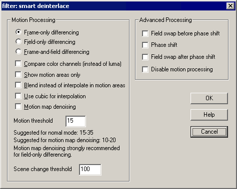
- Movie can become unnaturally blurred (unsharp) during movements.
|
| Bob
720x576->720x288
50 fps |
- Super fluid movie.
- Sharp picture.
- 100% deinterlaced movie. There won't be any interlaced lines
left.
|
- Greater visibility of compression artifacts, because the artifacts
stay the same size, while the height is cut in half. In other words:
When resizing during play you resize the compression artifacts also.
How
to prevent resizing artifacts.
- Jumping
artefacts, mostly visible with TV logos (see example below).
- In quiet scenes without movements (=where interlacing would not
matter), you lose a little bit of sharpness, because each
frame is half the height and has to be scaled up.
- Only a few software programs are able to deinterlace by bob.
- You need to resize the movie during play so you need a faster
processor.
- You need to play 50fps, so you need a faster processor or a
faster codec.
- Due to the anti-bobbing filter (see below) the frames are blurred a little bit.
- Because the movie has to be split into fields by Avisynth (see
below), the movie encoding speed is limited by Avisynth,
which can be quite slow.
- The resulting file size is quite big compared to the other methods.
|
Combinations
of the methods
above DURING PLAY
25fps/50fps |
- Can result in all the pros of the methods above
|
- Can result in all the cons of the methods above
- Since the material can result in both 25fps and 50fps (switching
between these two during play), this method
can only be used for watching movies rather than converting/encoding them.
- I doubt, that there is any program that can do it fast enough.
There was a DVD player software that could do it, but I don't know
if it was supported by hardware. There is also DScaler, but it's useless for
me since
a) I was never able to get it to work with my 3 WinTV cards
b)
it doesn't work with recorded movies (just with movies currently
displayed)
c) it is already partly integrated in WinTV
d) it's development is very slow (halted?)
- So you want to tell your friends to +have a horsepower computer,
+install a new player, +install deinterlacing software +and still
live with a result worse than deinterlacing properly in the first
place?
|
resizing down
to 384x288
or below
720x576->384x288
25fps |
- The easiest method.
- Any video editing program can do it, even if it doesn't feature a
"deinterlace method"
|
- The file sizes are quite small.
- The result can be exactly the same as "Blend", except
for the height/width, which makes the picture a little more unsharp.
- This is the easiest way to deinterlace videos. Example: you have a typical
DV Camera footage of 720x576 (interlaced) and you simply resize it down to
384x288.
- Why 384x288? Because:
1) 288=576/2, that means, that it's fast
to calculate and quality loss is low.
2) 384x288 is 4:3
but mainly for reason
3) Movies
that are 288 pixels high and below cannot be interlaced. So 384x288 is the
largest size that ensures you have a progressive-frames-only video.
|
Combination of
Bob+Weave
(=Progressive Scan)
720x576->720x576
50 fps |
- Super fluid movie.
- Unbelievably sharp picture.
- 99% deinterlaced movie. (99% means that there is a minimal chance
that mice teeth stay visible here and there)
- In quiet scenes without movements (=where interlacing would not
matter), you keep the full resolution, while the moving scenes are
fluid.
- You don't have to play with bob/debob filters (see below).
- No resizing is done. This leaves you extra sharpness.
|
- Jumping artifacts, mostly visible with TV logos (see example below).
- Only few software (like Virtualdub and maybe Cleaner) is able to deinterlace like this.
- You need to play 50fps, so you need a faster processor or a
faster codec.
- Because the movie has to be split into fields by Avisynth (see
below), the movie encoding speed is limited by Avisynth,
which can be quite slow.
- The resulting file size is bigger than with the other methods. See
file size comparison link below.
|
Motion compensation
720x576->720x576
50 fps |
|
- Professional hardware equipment can get very expensive. How expensive? Can you say $50'000? Or think $100'000? Then spell T-E-R-A-N-E-X. This is
equipment as used for professional
broadcasting: Teranex.
- There is a software solution by the German Fraunhofer Institute (yes, those
who invented mp3): HiCon32.
Brilliant piece of work.
- Some PC graphic cards (e.g. NVidia) and Video cards (e.g. Hauppauge) have
implemented onboard deinterlacing. Let's hope this gets standard as time goes
by.
|
| Despite the above mentioned
counterpoints, deinterlacing by "Bob" or "Weave+Bob" gives you excellent results (the best results of all available
software methods).
The reason is simple: How can you expect to have excellent results
when you convert 50 fields per second (=50 snapshots per
second) to 25 snapshots per second?
If you don't want to use Bob/Progressive Scan, I would suggest to
use Deinterlace by Discarding Fields, because
- it's fast (= can be done with a slow PC)
- you can do it
with the built-in filter of Virtualdub (see below), (= is free and easy to do)
- the image stays very sharp
- it leaves
absolutely no interlaced lines
- the resulting filesizes are small
I have encoded a video with the above methods and different options to compare
the file sizes.
Please also read: When
deinterlacing is not necessary.
|
| Note: When video editing software has an
option "Deinterlace" without further explanation it pretty
sure means "Blend" or "Discard Field".
|
|
|
|
How to deinterlace the movie the right way (Progressive
Scan) |
|
|
|
What you need to create a
50fps movie
|
| 1) |
Virtualdub (for
general video editing and the "Field bob" filter) |
| 2) |
DivX (since every other
good codec is too slow or the fast codecs are too bad). |
| 3) |
Avisynth
(to split the frames into 2 fields) |
| 4) |
A media player, which can resize the video unproportionally
from 720x288 (which is ratio 5:2) to 720x540 (which is ratio 4:3) during
play. If you use the Standard Windows Media Player you have to hold the
<SHIFT> key while resizing. Should
I resize during play or when encoding?
I would suggest to get ZoomPlayer or Sasami2K
because they offer more functions than the standard Windows Media Player and are faster. Read more about Do
yourself a favor and download another player. |
| 5) |
and of course an .AVI file (for example your camcorder'ed
movie) |
|
|
|
|
What to do next...
|
| 1) |
Install Virtualdub, install Avisynth, install DivX.
If you don't install ALL of the software programs above, deinterlacing
will NOT work.
If you want edit/convert your DV movies you also need to
install a DV codec, of course. These codecs are usually delivered with
your digital camcorder.
|
| 2) |
Now create a text file (e.g. with a text editor like notepad) with the name "Example.avs"
(yes, ".avs" is the extension and there is no ".txt"
extension) with the following content:
AVISource("Yourmovie.avi")
separatefields
|
(The textfile contains only these 2 lines)
|
| 3) |
Open "Example.avs" with Virtualdub and you'll notice that you
have a movie with fields instead of frames. Half the height, but no interlaced lines.
Click here if your .avs produces an error or doesn't work. |
| 4) |
Now there are 3 ways how you could continue:
4a) The worse method (but still very
good): Bob
Go to Virtualdub's filter menu and "Add.." the
built-in filter "Field bob". Without this filter the movie
bobs (=jumps up
and down). Why does the movie bob?
|
|
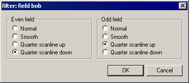
Choose "Quarter scanline down" & "Quarter scanline
up" or vice versa, depending on your video material. If you choose
the wrong one, your video will jump up and down even more (like in the
Persil commercial below).
Unfortunately this anti-bob filter also blurs a little bit. So you can add
Virtualdub's built in filter "Sharpen" right after "Field
Bob" and then sharpen the amount you like. |
| |
4b) The best method (but more time
consuming an bigger file size): Progressive Scan (=Weave+Bob)
Get the following the Virtualdub filter "Deinterlace
- Smooth" from the website of Gunnar Thalin. Copy it to
Virtualdub's "plugins" folder. Go to Virtualdub's filter menu and "Add.."
this filter. You may have to check "Alternate field order"
within this filter. But
this depends upon your movie source. |
| |
4c) Not the best and not the worst method
is: Bob by Avisynth
Simply change the avisynth script "Example.avs" to:
AVISource("Yourmovie.avi")
bob |
This will give you a lower quality than 4b)
but still a very big file. |
| 5) |
Save the video with the DivX codec. |
| 6) |
If your footage should result in a movie with
very
jumpy movements (back-forth)
A capture from the music clip "Foolish" by Ashanti (1.6MB)
or
jumpy
movements (up-down)
Arabic Persil commercial (0.9MB)
[both examples have bad quality]
then try one of the following:
|
a) |
Be sure that you don't have a film with uneven number of lines
(can happen if you crop a few top or bottom lines) |
| b) |
Experiment by adding one or more of the following commands:
ComplementParity
AssumeFrameBased
AssumeFieldBased
SwapFields
So you could try:
AVISource("Yourmovie.avi")
complementparity
separatefields |
|
| c) |
Change the field order in the
VirtualDub filter you are using: So check "Quarterfield
up/down" instead of "down/up", or check "Swap
fields" or "Even fields first", depending upon
which filter you are using. |
|
|
|
|
|
Here are a few deinterlaced examples |
|
|
| Sample clips
after deinterlacing |
|
Important! How to play:
|
Select ratio 4:3 from the menu of your player. If your player cannot choose a ratio then
you will see the movie half size (but it will still be very fluid).
Switch to fullscreen mode.
Disable any DivX postprocessing. Postprocessing will slow down the
playing speed. Even with little postprocessing the movie won't play
fluidly with a fast CPU. So set the Quality level (=post-processing
level) to "MIN".
Actually you shouldn't use the standard DivX Decoder from DivX.
Get the freeware decoder suite FFDShow.
The faster your processor the better. It should be > 0.6
GHz otherwise you drop frames and it looks as if the movie was badly
coded. I have several computers and I can watch the movies below smoothly with my 650Mhz
Athlon. It may also depend on the speed of your graphics card. |
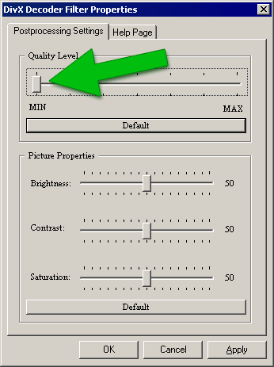
Yes, I know this capture is from an old DivX version. But I
won't update it everytime DivX releases a new version.
|
|
|
|
brit.avi
(5.4 MB)
Bob (method 4a)
50 fps
17 seconds
Video Codec:
DivX 5
(quality based:
93%)
Audio Codec: mp3
Directly recorded from MTV's Digital
(MPEG-2) Broadcasting and converted to a
DivX .avi
You have to watch the movie 4:3 |
1) Please note how fluid the movie
is
2) but also note that
the MTV logo at the upper right corner is flimmering a
bit. More about
flimmering.
3) this is not the best quality, because I used "Bob"
instead of "Progressive Scan".
4) Also pay attention to the black dancer at the
right, he's quite good.
5) This performance of Britney Spears (MTV VMA 2001) was aired 50fps. Justin Timberlake's performance one year later at the MTV Video Music Awards 2002 was aired also 50fps, but these frames had been artificially interlaced from 25 progressive frames, to make it look more "film-like".
|
|
|
turtle.avi (7.0 MB)
Bob (method 4a)
50 fps
17 seconds
Video Codec:
DivX 4.12
(quality based: 93%)
Audio Codec: mp3
Recorded with a camcorder and converted from DV to a DivX .avi
You have to watch the movie 4:3
|
1) Please note how fluid the movie
is
2) but also
how stupid the turtle is.
3) The same applies as in 3) of the example
above.
|
|
|
reflex_smooth.avi
(4.1 MB)
Progressive Scan (method 4b)
50 fps
16 seconds
Video Codec:
DivX 5
(quality based: 93%)
Audio Codec: mp3
Recorded with a camcorder and converted from DV to a DivX
.avi
You have to watch the movie 4:3
|
1) Please note, that the quality is better than
turtle.avi, because of the newer DivX version and because I used the "Deinterlace Smooth" filter
instead of just "Bob".
2) This is not the best quality, but only the half
quality, because it's only 720x288 (instead of 720x576). This is NOT a normal
height with this method (4b). With this method
resulting heights and widths are the same as the source video's. 720x288
in this case is purely artificial due to downsizing done by me, to
make the video comparable to the methods above.
3) Though the height/width is greater and the
quality is better than brit.avi this sample is 1.3 MB smaller, due
to the low motion of the scene and due to the higher quality of the
original (DV tape). This shows how unpredictable filesizes can be.
|
|
|
inmyhand_smooth.avi
(2.8 MB)
Progressive Scan (method 4b)
50 fps
15 seconds
Video Codec:
DivX 5
(quality based: 93%)
Audio Codec: mp3
Recorded with a camcorder and converted from DV to a DivX
.avi and resized from 720x576 to 720x288
You have to watch the movie 4:3
|
1) Though the movie is very sharp this sample is
1.3 MB smaller than reflex_smooth.avi, due
to the darkness and the very low motion of the scene.
2) The same applies as in 2) of the example above.
|
|
|
mousse_smooth_big.avi
(6.5 MB)
Progressive Scan (method 4b)
50 fps
30 seconds
Video Codec:
DivX 5
(quality based: 93%)
Audio Codec: mp3
You have to watch the movie 4:3
|
1) This is a capture
from the digital broadcasting of the music clip "Fire" by
Mousse T. (a German DJ) featuring Emma Lanford.
2) It's from a TV Channel
which has a resolution of 480x576 only, but still delivers a quite sharp
picture.
3) This clip was filmed with a film camera (24fps) and has been interlaced artificially. Instead of undoing the interlacing and convert it back to 24fps, I just deinterlaced it with method 4b.
|
|
|
nena.avi (14.3 MB)
Progressive Scan (method 4b)
50 fps
34 seconds
Video Codec:
DivX 5
(quality based:
93%)
Audio Codec: mp3
Directly recorded from SAT1's Digital
(MPEG-2) Broadcasting and converted to a
DivX .avi
You have to watch the movie 4:3 |
1) Please note the fluid camera movements (above the audience), fine details (background), excellent fast movements (balloons)
2) Contrary to the samples above, I didn't downsize the height to x288, but left it untouched. Since the clip is letterboxed (=black beams at top/bottom) DivX doesn't need too much horse power. Thus you should be able to watch this movie with this height. If you get a stuttering result then install ffdshow (a very fast free decoder for several DivX versions).
3) This the concert of Nena's 20th anniversary as an artist. She performes live a new version of her world famous song "99 red balloons".
4) There are TV channels with even higher quality than this German channel.
|
|
|
Here is another example. This time to show you, how fluid
a slow motion can be generated out of a 50fps movie:
|
|
|
|
slowsnake.avi
(1.4 MB)
50 fps
15 seconds
Video Codec: DivX 5
This clip is already 4:3
To keep the .avi smaller this clip hasn't got the best
quality
This is another capture
from the appearance of virgin (?) Britney Spears (?) in MTV's
(?) video music awards 2001.
|
1)
Please note how fabulous the slomo is, but also note that
there's no MTV logo at the upper right corner.
2) How I did it:
a) I created a 50fps, as
described above.
b) I erased the MTV logo with the Virtualdub filter Logoaway.
Click here to compare video
file sizes with different Logoaway settings.
c) I made the clip 3x longer (stretched from 5 seconds
to 15) with the program Dynapel
Motionperfect
|
|
|
FallOfAChampion.avi
(5.9 MB)
50 fps
21 seconds
Video Codec: DivX 5
This clip is already 4:3 (320x240)
To keep the .avi smaller this clip hasn't got the best
quality.
This is a DVB capture from the soccer
world championship 2002 and you see the Frenchman Zinedine Zidane falling in slow motion.
|
1) This footage was already aired slomo and I stretched
it x3, so now it should be something about 9xSlomo.
2) France lost this game with 0:2 against Denmark and
had to leave the championship.
3) Please note the thigh muscles of the red player
#4 swinging and wobbling at the end of this clip. Also note how
fast/slow the player is running.
4) The background music is Led Zeppelin "Travelling
river side blues".
|
|
|
|
Notes
|
|
The figures above are valid for PAL. In NTSC countries (USA,
Japan,...) it's ca. 30 fps (59.94 fields per second) and the size can be up to
720x480 instead of 720x576.
|
|
|
Interlacing is visible in movies which
have a height > 288 (NTSC: > 240). So when you capture a
movie, say, 384x288 or smaller you won't
see interlaced frames. It's practically blending. Some capture
cards don't blend but drop every second field with sizes smaller
or equal to 288. |
|
|
The term "Half Image"/"Half
Picture" is another word for "Field". The
"Half" relates to the fact, that the half resolution
(e.g. 288 pixels) of the 2 fields (=half images) is combined
to full resolution (576 pixels) in quiet areas. |
|
|
In my personal opinion PAL is better than NTSC:
|
1) |
Because in the end resolution matters. NTSC
has only 83% of PAL's resolution. And PAL's resolution is
already bad enough. |
| 2) |
Cinema movie are recorded with 24 fps. To convert them to PAL
(25 fps) you simply make the movie run faster (4% faster, some people with sensitive ears
may hear the raise in tone). But to
convert it to NTSC (30 fps) is a completely different story.
Please read more about
inversive telecine.
|
|
3) |
PAL is more common worldwide than NTSC. About 4
times as many people live in a PAL country than in an NTSC
country. |
| I am not talking
about other stuff like Hue Fluctuation, Contrast, Gamma
ratio and so on (Never The Same Color, because of its color problems"),
because PAL is also not the best in these regards. I am talking about resolution and frame
rate which are the biggest arguments for Pal.
As you see from the reasons above this has nothing to do with anti-Amerikanism
or anti-Japanism. It's just based on pure logic. I have seen
PAL movies and NTSC movies and the clarity of PAL is much
better. Their fluidity (50 images per second vs. 60 images per second) is nearly
the same.
|
|
|
|
There are camcorders (like Panasonic's AG-DVX100)
that can film with 24 frames per second. Without fields. Just
progressive (= non-interlaced) frames. Why 24 and not 25? To
give you the cinema feeling. So the info on this site regarding
deinterlacing movies doesn't apply to footage filmed like that. |
|
|
When you buy a DVD, some are encoded
with interlaced frames and some are progressive. The output is always interlaced
of course (except for some special DVD players) because TV Sets usually don't
support progressive input. |
|
|
DivX suckz and DivX rulez. DivX rules
because the decoder is fast and free. DivX rules because the
encoder is good and fast. DivX sucks because it's expensive as hell if
you want to commercially publish your own movies: You have to pay DivX Networks for the encoder AND for the
encoded film if you want to use it commercially. AND you have to
pay the MPEG patent holders (mpegla.com)
per movie/per minute (because DivX is Mpeg-4). The MPEGLA fee for itself is
already way too high. |
|
|
Please see my website www.1-4a.com
for movie utilities. |
|
|
|
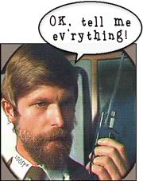
|
Please tell me your thoughts...
|
| Please write your comments below and
press <Return> If you don't know what to write, just tell me
how you like the
examples, where you've found me or tell me spelling/grammar
mistakes you've noticed (English is not my mother tongue as you've probably
noticed).
|
|
|
|

{kind=link}